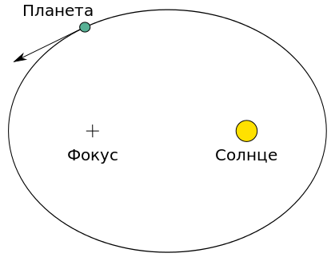
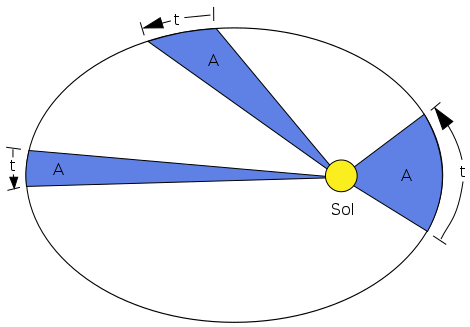

Теоретическое введение
Гравита?ция (притяже?ние, всеми?рное тяготе?ние, тяготе?ние) (от лат. gravitas«тяжесть»)— универсальное фундаментальное взаимодействие между всеми материальными телами. В приближении малых (по сравнению со скоростью света) скоростей и слабого гравитационного взаимодействия описывается теорией тяготения Ньютона, в общем случае описывается общей теорией относительности Эйнштейна. В квантовом пределе гравитационное взаимодействие предположительно описывается квантовой теорией гравитации, которая ещё не разработана.
Гравитация играет крайне важную роль в структуре и эволюции Вселенной (устанавливая связь между плотностью Вселенной и скоростью её расширения), определяя ключевые условия равновесия и устойчивости астрономических систем. Без гравитации во Вселенной не было бы планет, звёзд, галактик, чёрных дыр.
Гравитационное притяжение

В рамках классической механики гравитационное притяжение описывается законом всемирного тяготения Ньютона, который гласит, что сила гравитационного притяжения между двумя материальными точками массы m1 и m2 , разделёнными расстоянием r , пропорциональна обеим массам и обратно пропорциональна квадрату расстояния — то есть: .svg)
Здесь G — гравитационная постоянная, равная примерно 6,67428?10?11 м?/(кг·с?). Этот закон выполняется в приближении при малых по сравнению со скоростью света v << c скоростей и слабого гравитационного взаимодействия (если для изучаемого объекта, расположенного на расстоянии R от тела массой G, величина .svg) ). В общем случае гравитация описывается общей теорией относительности Эйнштейна.
). В общем случае гравитация описывается общей теорией относительности Эйнштейна.
Закон всемирного тяготения — одно из приложений закона обратных квадратов, встречающегося также и при изучении излучений (см., например, Давление света), и являющегося прямым следствием квадратичного увеличения площади сферы при увеличении радиуса, что приводит к квадратичному же уменьшению вклада любой единичной площади в площадь всей сферы.
Гравитационное поле, так же как и поле силы тяжести, потенциально. Это значит, что можно ввести потенциальную энергию гравитационного притяжения пары тел, и эта энергия не изменится после перемещения тел по замкнутому контуру. Потенциальность гравитационного поля влечёт за собой закон сохранения суммы кинетической и потенциальной энергии и при изучении движения тел в гравитационном поле часто существенно упрощает решение. В рамках ньютоновской механики гравитационное взаимодействие является дальнодействующим. Это означает, что, как бы массивное тело ни двигалось, в любой точке пространства гравитационный потенциал зависит только от положения тела в данный момент времени.
Большие космические объекты — планеты, звёзды и галактики имеют огромную массу и, следовательно, создают значительные гравитационные поля.
Гравитация — слабейшее взаимодействие. Однако, поскольку оно действует на любых расстояниях и все массы положительны, это, тем не менее, очень важная сила во Вселенной. В частности, электромагнитное взаимодействие между телами в космических масштабах мало, поскольку полный электрический заряд этих тел равен нулю (вещество в целом электрически нейтрально).
Также гравитация, в отличие от других взаимодействий, универсальна в действии на всю материю и энергию. Не обнаружены объекты, у которых вообще отсутствовало бы гравитационное взаимодействие.
Из-за глобального характера гравитация ответственна и за такие крупномасштабные эффекты, как структура галактик, чёрные дыры и расширение Вселенной, и за элементарные астрономические явления — орбиты планет, и за простое притяжение к поверхности Земли и падения тел.
Гравитация была первым взаимодействием, описанным математической теорией. Аристотель (IV в. до н. э.) считал, что объекты с разной массой падают с разной скоростью. И только много позже (1589) Галилео Галилей экспериментально определил, что это не так — если сопротивление воздуха устраняется, все тела ускоряются одинаково. Закон всеобщего тяготения Исаака Ньютона (1687) хорошо описывал общее поведение гравитации. В 1915 году Альберт Эйнштейн создал Общую теорию относительности, более точно описывающую гравитацию в терминах геометрии пространства-времени.
Небесная механика
Небесная механика — раздел астрономии, применяющий законы механики для изучения и вычисления движения небесных тел, в первую очередь Солнечной системы (Луны, планет и их спутников, комет, малых тел), и вызванных этим явлений (затмений и проч.).
Законы движения Ньютона
 Закон инерции. Согласно этому закону, в системе отсчета, движущейся без ускорения, каждое тело сохраняет состояние покоя или прямолинейного и равномерного движения, если на него не действует внешняя сила. Это противоречит положению аристотелевой физики, утверждающему, что для поддержания движения тела требуется сила. Закон Ньютона говорит, что внешняя сила необходима только для приведения тела в движение, для его остановки или для изменения направления и величины его скорости. Темп изменения скорости тела по величине или направлению называется «ускорением» и свидетельствует о том, что на тело действует сила. Для небесных тел обнаруженное из наблюдений ускорение служит единственным указателем действующей на них внешней силы. Понятие о силе и ускорении позволяет с единой позиции объяснить движение всех тел в природе: от теннисного мяча до планет и галактик.
Закон инерции. Согласно этому закону, в системе отсчета, движущейся без ускорения, каждое тело сохраняет состояние покоя или прямолинейного и равномерного движения, если на него не действует внешняя сила. Это противоречит положению аристотелевой физики, утверждающему, что для поддержания движения тела требуется сила. Закон Ньютона говорит, что внешняя сила необходима только для приведения тела в движение, для его остановки или для изменения направления и величины его скорости. Темп изменения скорости тела по величине или направлению называется «ускорением» и свидетельствует о том, что на тело действует сила. Для небесных тел обнаруженное из наблюдений ускорение служит единственным указателем действующей на них внешней силы. Понятие о силе и ускорении позволяет с единой позиции объяснить движение всех тел в природе: от теннисного мяча до планет и галактик.
Поскольку объект, движущийся по искривлённой траектории, испытывает ускорение, было заключено, что Земля на её орбите вокруг Солнца постоянно подвергается влиянию силы, которую назвали «гравитацией». Задача небесной механики состоит в том, чтобы определить действующую на небесное тело силу гравитации и выяснить, как она влияет на его движение.
Закон силы. Если к телу приложена сила, то оно движется ускоренно, причем чем больше сила, тем больше ускорение. Однако одна и та же сила вызывает различное ускорение у разных тел. Характеристикой инертности тела (то есть сопротивления ускорению) служит его «масса», которую в первом приближении можно определить как «количество вещества»: чем больше масса тела, тем меньше его ускорение под действием заданной силы. Таким образом, второй закон Ньютона утверждает, что ускорение тела пропорционально приложенной к нему силе и обратно пропорционально его массе. Если из наблюдений известны ускорение тела и его масса, то, используя этот закон, можно вычислить действующую на тело силу (На самом деле Ньютону принадлежит другая, более сложная формулировка этого закона; он утверждал, что сила, действующая на тело, есть скорость изменения импульса этого тела).
Закон противодействия. Этот закон утверждает, что взаимодействующие тела прилагают друг к другу равные по величине, но противоположно направленные силы. Поэтому в системе из двух тел, влияющих друг на друга одинаковой по величине силой, каждое испытывает ускорение, обратно пропорциональное его массе. Значит, лежащая на прямой между ними точка, удалённая от каждого обратно пропорционально его массе, будет двигаться без ускорения, несмотря на то, что каждое из тел движется ускоренно. Эту точку называют «центром масс»; вокруг неё обращаются звёзды в двойной системе. Если одна из звёзд вдвое массивнее другой, то она движется вдвое ближе к центру масс, чем её соседка.
Законы Кеплера
Чтобы изучать движение небесных тел, познакомимся с силой гравитации. Лучше всего это сделать на примере взаимного движения двух тел: компонентов двойной звезды или Земли вокруг Солнца (для простоты предполагая, что другие планеты отсутствуют). К таким системам применимы законы Кеплера. В основе их лежит тот факт, что оба взаимодействующих тела движутся в одной плоскости. Это означает, что и сила гравитации всегда лежит в той же плоскости.
 Закон эллипсов. Первый закон Кеплера утверждает, что планеты Солнечной системы движутся по эллипсам, в одном из фокусов которого находится Солнце. Фактически этот закон справедлив только для системы из двух тел, например для двойной звезды. Но и в Солнечной системе он выполняется довольно точно, поскольку на движение каждой планеты в основном влияет массивное Солнце, а все остальные тела влияют несравненно слабее.
 Закон площадей. Если отмечать не только положение планеты, но и время, то можно узнать не только форму орбиты, но и характер движения планеты по ней. Оно подчиняется второму закону Кеплера, утверждающему, что линия, соединяющая Солнце и планету (или компоненты двойной звезды), за равные интервалы времени «заметает» равные площади. Например, эта линия между Солнцем и Землей каждые сутки заметает 2·1014 квадратных километров. Из закона площадей следует, что Солнце притягивает планету строго по прямой, соединяющей их центры. Верно и обратное: для любой центральной силы справедлив второй закон Кеплера.
Сильные гравитационные поля
 В сильных гравитационных полях (а также при движении в гравитационном поле с релятивистскими скоростями) начинают проявляться эффекты общей теории относительности (ОТО):
В сильных гравитационных полях (а также при движении в гравитационном поле с релятивистскими скоростями) начинают проявляться эффекты общей теории относительности (ОТО):
- изменение геометрии пространства-времени;
- как следствие, отклонение закона тяготения от ньютоновского;
- и в экстремальных случаях — возникновение чёрных дыр;
- запаздывание потенциалов, связанное с конечной скоростью распространения гравитационных возмущений;
- как следствие, появление гравитационных волн;
- эффекты нелинейности: гравитация имеет свойство взаимодействовать сама с собой, поэтому принцип суперпозиции в сильных полях уже не выполняется.
Солнечная система
Солнечная система – это планетная система, включающая в себя все естественные космические объекты, обращающиеся вокруг Солнца: планеты и их спутники, карликовые планеты и их спутники, а также малые тела - астероиды, кометы, метеороиды, космическую пыль. Солнечная система входит в состав галактики Млечный Путь.
Планеты Солнечной системы издавна делились учеными на две группы. Первая - это планеты земного типа: Меркурий, Венера, Земля, Марс. Для них характерны относительно небольшие размеры, малое количество спутников и твердое состояние. Основными их составляющими являются силикаты и железо. Остальные - Юпитер, Сатурн, Уран, Нептун - планеты-гиганты, состоящие из газообразного водорода и гелия. Все они движутся вокруг Солнца по эллиптическим орбитам, отклоняясь от заданной траектории, если рядом проходит планета-сосед.
Пять ближайших к Земле планет - Меркурий, Венера, Марс, Юпитер и Сатурн - были известны с древности.
Солнце
 Единственная звезда Солнечной системы: описание и характеристика с фото, интересные факты, состав и структура, расположение в галактике, развитие.
Солнце выступает центром и источником жизни для нашей Солнечной системы. Звезда относится к классу желтых карликов и занимает 99.86% всей массы нашей системы, а гравитация по силе преобладает над всеми небесными телами. В древности люди сразу поняли, какое значение имеет Солнце для земной жизни, поэтому упоминание о яркой звезде встречается в самых первых текстах и наскальных рисунках. Это было центральное божество, правящее над всеми.
Единственная звезда Солнечной системы: описание и характеристика с фото, интересные факты, состав и структура, расположение в галактике, развитие.
Солнце выступает центром и источником жизни для нашей Солнечной системы. Звезда относится к классу желтых карликов и занимает 99.86% всей массы нашей системы, а гравитация по силе преобладает над всеми небесными телами. В древности люди сразу поняли, какое значение имеет Солнце для земной жизни, поэтому упоминание о яркой звезде встречается в самых первых текстах и наскальных рисунках. Это было центральное божество, правящее над всеми.
Солнце - звезда главной последовательности G-типа с абсолютной величиной 4.83, что ярче примерно 85% других звезд в галактике, многие из которых выступают красными карликами. При диаметре 696342 км и массе – 1.988 х 1030 кг Солнце в 109 раз крупнее Земли и в 333000 раз массивнее.
Это звезда, поэтому плотность меняется в зависимости от слоя. Средний показатель достигает 1.408 г/см3. Но ближе к ядру увеличивается до 162.2 г/см3, что в 12.4 раз превосходит земную.
В небе кажется желтым, но истинный цвет – белый. Видимость создается атмосферой. Температура возрастает с приближенностью к центру. Ядро нагревается до 15.7 млн. К, корона – 5 млн. К, а видимая поверхность – 5778 К.
Меркурий
 Ближайшая к Солнцу планета, среднее расстояние от Солнца 0,387 а.е (58 млн км), а расстояние до Земли колеблется от 82 до 217 млн км. Меркурий движется вокруг Солнца по сильно вытянутой эллиптической орбите, плоскость которой наклонена к плоскости эклиптики под углом 7°. Средний радиус планеты составляет 2440 км, масса 3,3 на 10 в 23 степени кг (0,055 массы Земли), а плотность почти такая же, как у Земли (5,43 г/см3). Средняя скорость движения Меркурия по орбите - 47,9 км/с. Период обращения вокруг Солнца (меркурианский год) составляет около 88 суток, период вращения вокруг своей оси равен 58,6 суткам (меркурианские звездные сутки), продолжительность солнечных суток на Меркурии равна 176 земным суткам – двум меркурианским годам.
Ближайшая к Солнцу планета, среднее расстояние от Солнца 0,387 а.е (58 млн км), а расстояние до Земли колеблется от 82 до 217 млн км. Меркурий движется вокруг Солнца по сильно вытянутой эллиптической орбите, плоскость которой наклонена к плоскости эклиптики под углом 7°. Средний радиус планеты составляет 2440 км, масса 3,3 на 10 в 23 степени кг (0,055 массы Земли), а плотность почти такая же, как у Земли (5,43 г/см3). Средняя скорость движения Меркурия по орбите - 47,9 км/с. Период обращения вокруг Солнца (меркурианский год) составляет около 88 суток, период вращения вокруг своей оси равен 58,6 суткам (меркурианские звездные сутки), продолжительность солнечных суток на Меркурии равна 176 земным суткам – двум меркурианским годам.
Поверхность Меркурия, подобно лунной, покрыта кратерами. Атмосфера очень разреженная. Меркурий обладает крупным железным ядром, являющимся источником магнитного поля, по своей совокупности составляющим 0,1 от земного. Температура на поверхности Меркурия колеблется от 90 до 700 К (?180…430 °C). Планета названа в честь бога римского пантеона Меркурия, аналога греческого Гермеса и Вавилонского Набу. Естественных спутников у планеты нет.
Венера
 Вторая по удаленности от Солнца планета, среднее расстояние от Солнца 0,72 а.е. (108,2 млн км). Средний радиус планеты составляет 6051 км, масса - 4,9 на 10 в 24 степени кг (0,82 массы Земли), средняя плотность 5,24 г/см3. Орбита Венеры очень близка к круговой. Средняя скорость движения Венеры по орбите - 34,99 км/с. Наклон орбиты к плоскости эклиптики равен 3,4°. Венера вращается вокруг своей оси, наклоненной к плоскости орбиты на 2°, с востока на запад – в направлении, противоположном направлению вращения большинства планет. Период обращения вокруг Солнца - 224,7 суток, период вращения вокруг своей оси равен 243 суткам, продолжительность солнечных суток на планете - 116,8 земных суток.
Вторая по удаленности от Солнца планета, среднее расстояние от Солнца 0,72 а.е. (108,2 млн км). Средний радиус планеты составляет 6051 км, масса - 4,9 на 10 в 24 степени кг (0,82 массы Земли), средняя плотность 5,24 г/см3. Орбита Венеры очень близка к круговой. Средняя скорость движения Венеры по орбите - 34,99 км/с. Наклон орбиты к плоскости эклиптики равен 3,4°. Венера вращается вокруг своей оси, наклоненной к плоскости орбиты на 2°, с востока на запад – в направлении, противоположном направлению вращения большинства планет. Период обращения вокруг Солнца - 224,7 суток, период вращения вокруг своей оси равен 243 суткам, продолжительность солнечных суток на планете - 116,8 земных суток.
Венера не имеет естественных спутников. Атмосфера ее состоит в основном из углекислого газа (96 %) и азота (почти 4 %). Давление у поверхности достигает 93 атмосфер, температура - 737 К. Причиной столь высокой температуры на Венере является парниковый эффект, создаваемый плотной углекислотной атмосферой. Поверхность Венеры в основном равнинная, сложена базальтами, обнаружены следы вулканической деятельности, ударные кратеры. Планета состоит преимущественно из камня и металла. Планета получила свое название в честь Венеры, богини любви из римского пантеона.
Земля
 Третья от Солнца планета Солнечной системы, среднее расстояние от Солнца 1 а.е. (149,6 млн км), средний радиус 6371,160 км (экваториальный 6378, 160 км, полярный 6356,777 км), масса – 6 на 10 в 24 степени кг. Орбита Земли близка к окружности с радиусом около 384400 км. Средняя скорость движения Земли по орбите равна 29,765 км/с. Период обращения вокруг Солнца 365,3 суток, период вращения вокруг своей оси – 23 часа 56 минут (звездные сутки), период вращения относительно Солнца (средние солнечные сутки) 24 часа. Имеет естественный спутник - Луну.
Третья от Солнца планета Солнечной системы, среднее расстояние от Солнца 1 а.е. (149,6 млн км), средний радиус 6371,160 км (экваториальный 6378, 160 км, полярный 6356,777 км), масса – 6 на 10 в 24 степени кг. Орбита Земли близка к окружности с радиусом около 384400 км. Средняя скорость движения Земли по орбите равна 29,765 км/с. Период обращения вокруг Солнца 365,3 суток, период вращения вокруг своей оси – 23 часа 56 минут (звездные сутки), период вращения относительно Солнца (средние солнечные сутки) 24 часа. Имеет естественный спутник - Луну.
Марс
 Четвертая планета от Солнца, среднее расстояние от Солнца составляет 1,5 а.е. (227,9 млн км). Минимальное расстояние от Марса до Земли составляет 55,75 млн км, максимальное - около 401 млн. км. Экваториальный радиус Марса равен 3396,9 км, масса 6,4 на10 в 23 степени кг (0,108 массы Земли), плотность 3,95 г/см3. Отклонение орбиты по отношению к эклиптике - 1,9°. Средняя скорость обращения вокруг Солнца ? 24,13 км/с. Марс обращается вокруг Солнца за 687 земных суток, период вращения вокруг своей оси - 24 часа 37 минут.
Четвертая планета от Солнца, среднее расстояние от Солнца составляет 1,5 а.е. (227,9 млн км). Минимальное расстояние от Марса до Земли составляет 55,75 млн км, максимальное - около 401 млн. км. Экваториальный радиус Марса равен 3396,9 км, масса 6,4 на10 в 23 степени кг (0,108 массы Земли), плотность 3,95 г/см3. Отклонение орбиты по отношению к эклиптике - 1,9°. Средняя скорость обращения вокруг Солнца ? 24,13 км/с. Марс обращается вокруг Солнца за 687 земных суток, период вращения вокруг своей оси - 24 часа 37 минут.
Разреженная атмосфера состоит в основном из углекислого газа, среднее давление у поверхности 0,006 атм. Марс преимущественно состоит из камня и металла. Поверхность Марса - пыле-песчаная пустыня с каменистыми россыпями, потухшими вулканами, ударными кратерами, ветвящимися каньонами типа высохших русел рек. Известны два спутника Марса - Фобос и Деймос. Планету Марс в древности назвали в честь бога войны за кроваво-красный цвет.
Марс 2018 сентябрь. Новейшая панорама, корпус ровера Кьюриосити.
Юпитер
 Пятая по счету от Солнца, а также крупнейшая планета Солнечной системы, среднее расстояние от Солнца 5,2 а.е.(778 млн км), экваториальный радиус равен 71,4 тыс. км, полярный – около 67 тысяч км, масса 1,9 на 10 в 27 степени кг (317,8 массы Земли), средняя скорость обращения вокруг Солнца - 13,06 км/с. Наклон плоскости орбиты к плоскости эклиптики 1,3°. Расстояние Юпитера от Земли меняется в пределах от 188 до 967 млн. км. Полный оборот вокруг Солнца Юпитер совершает за 11,9 года, период вращения вокруг своей оси – 9 часов 45 минут (для полярной зоны) и 9 часов 50,5 минут для экваториальной зоны. Экватор наклонен к плоскости орбиты под углом 3°5'; из-за малости этого угла сезонные изменения на Юпитере выражены весьма слабо.
Пятая по счету от Солнца, а также крупнейшая планета Солнечной системы, среднее расстояние от Солнца 5,2 а.е.(778 млн км), экваториальный радиус равен 71,4 тыс. км, полярный – около 67 тысяч км, масса 1,9 на 10 в 27 степени кг (317,8 массы Земли), средняя скорость обращения вокруг Солнца - 13,06 км/с. Наклон плоскости орбиты к плоскости эклиптики 1,3°. Расстояние Юпитера от Земли меняется в пределах от 188 до 967 млн. км. Полный оборот вокруг Солнца Юпитер совершает за 11,9 года, период вращения вокруг своей оси – 9 часов 45 минут (для полярной зоны) и 9 часов 50,5 минут для экваториальной зоны. Экватор наклонен к плоскости орбиты под углом 3°5'; из-за малости этого угла сезонные изменения на Юпитере выражены весьма слабо.
Юпитер представляет собой газо-жидкое тело, твердой поверхности не имеет. Атмосфера состоит на 89 % из водорода и на 11 % гелия и напоминает по химическому составу Солнце. Планету Юпитер опоясывают кольца, состоящие из совокупности сравнительно мелких каменных частиц размером от нескольких мкм до нескольких метров. Юпитер назван в честь царя римских богов.
У Юпитера есть 63 известных естественных спутника. Четыре наиболее крупных спутника - Ио, Европа, Ганимед и Каллисто - были открыты в 1610 году Галилео Галилеем. Пятый спутник - Юпитер V, открытый в 1892 году, - самый близкий к планете, он удален от ее поверхности всего лишь на 2,54 экваториальных радиуса Юпитера. Все эти спутники движутся практически по круговым орбитам, плоскости которых совпадают с плоскостью экватора Юпитера.
К концу 1970?х годов было известно о 13 спутниках Юпитера. В 1979 году американским космическим аппаратом «Вояджер?1» были обнаружены еще три спутника. Начиная с 1999 года с помощью наземных телескопов нового поколения были открыты еще 47 спутников планеты, подавляющее большинство из которых имеют диаметр в 2-4 километра.
Сатурн
 Шестая планета от Солнца и вторая по размерам планета в Солнечной системе после Юпитера. Среднее расстояние Сатурна от Солнца 9,54 а.е. (1,427 млрд км), средний экваториальный радиус около 60,3 тысяч км, полярный - около 54 тысяч км, масса 5,68 на 10 в 26 степени кг (95,1 массы Земли). Средняя плотность Сатурна меньше плотности воды (около 0,7 г/см3). Период обращения вокруг Солнца 29,46 года, период вращения вокруг своей оси 10 часов 39 минут (экваториальные области вращаются на 5% быстрее полярных). Сатурн - наиболее сплющенная планета Солнечной системы.
Шестая планета от Солнца и вторая по размерам планета в Солнечной системе после Юпитера. Среднее расстояние Сатурна от Солнца 9,54 а.е. (1,427 млрд км), средний экваториальный радиус около 60,3 тысяч км, полярный - около 54 тысяч км, масса 5,68 на 10 в 26 степени кг (95,1 массы Земли). Средняя плотность Сатурна меньше плотности воды (около 0,7 г/см3). Период обращения вокруг Солнца 29,46 года, период вращения вокруг своей оси 10 часов 39 минут (экваториальные области вращаются на 5% быстрее полярных). Сатурн - наиболее сплющенная планета Солнечной системы.
Сатурн состоит на 93 % из водорода (по объему) и на 7 % - из гелия и не имеет твердой поверхности. Относится к типу газовых планет и имеет систему колец. Кольца Сатурна – концентрические образования различной яркости, как бы вложенные друг в друга, и образующие единую плоскую систему небольшой толщины, располагающуюся в экваториальной плоскости Сатурна. Километровой толщины кольца образованы из льда и пыли и состоят из бессчетного количества частиц разного размера: от 2,5 см до нескольких метров. Планета Сатурн была названа в честь греческого бога времени.
Известно уже 60 естественных спутников Сатурна, большая часть из которых обнаружены при помощи космических аппаратов. Большая часть спутников состоит из горных пород и льда. Крупнейший спутник - Титан, открытый в 1655 году Христианом Гюйгенсом, - по своей величине превосходит планету Меркурий. Диаметр Титана около 5200 км. Титан облетает вокруг Сатурна каждые 16 дней. Титан - единственный спутник, обладающий очень плотной атмосферой, в 1,5 раза больше Земной, и состоящей в основном из 90% азота, с умеренным содержанием метана.
Уран
 Седьмая от Солнца планета Солнечной системы. Планета была открыта в 1781 году английским астрономом Уильямом Гершелем и названа в честь греческого бога неба Урана. Среднее расстояние от Солнца 19,18 а.е. (2871 млн км), средний радиус 25560 км, масса 8,69 на 10 в 25 степени (14,54 массы Земли), средняя плотность - 1,27 г/см3. Орбитальная скорость - от 6,49 до 7,11 км/с. Наклон орбиты к плоскости эклиптики (градусы) 0,8°. Период обращения вокруг Солнца 84 года, период вращения вокруг своей оси - около 17 часов 14 минут.
Седьмая от Солнца планета Солнечной системы. Планета была открыта в 1781 году английским астрономом Уильямом Гершелем и названа в честь греческого бога неба Урана. Среднее расстояние от Солнца 19,18 а.е. (2871 млн км), средний радиус 25560 км, масса 8,69 на 10 в 25 степени (14,54 массы Земли), средняя плотность - 1,27 г/см3. Орбитальная скорость - от 6,49 до 7,11 км/с. Наклон орбиты к плоскости эклиптики (градусы) 0,8°. Период обращения вокруг Солнца 84 года, период вращения вокруг своей оси - около 17 часов 14 минут.
Планета Уран имеет небольшое твердое железно-каменное ядро, над которым сразу начинается плотная атмосфера. Атмосфера на Уране имеет толщину не менее 8000 км и состоит примерно из 83 % водорода, 15 % гелия и 2 % метана.
Подобно другим газовым планетам, Уран имеет кольца. Кольцевая система была обнаружена в 1977 году. Ученым известно 13 отдельных колец планеты. Большинство колец Урана непрозрачны, их ширина не больше нескольких километров. Кольца состоят в основном из макрочастиц - объектов диаметром от 20 сантиметров до 20 метров - и пыли.
У планеты Уран открыты 27 естественных спутников, из них пять крупных. Крупнейшие - Титания, диаметр около 1600 км, и Оберон, диаметром около 1550 км. Титания и Оберон были обнаружены Уильямом Гершелем 11 января 1787 года, через шесть лет после открытия им Урана. Большие спутники Урана на 50% состоят из водяного льда, на 20% - из углеродных и азотных соединений, на 30% - из разных соединений кремния (силикатов).
Нептун
 Восьмая планета от Солнца и четвертая по размеру среди планет. Нептун открыт в Берлинской обсерватории 23 сентября 1846 года немецким астрономом Иоганном Галле на основании предсказаний, сделанных независимо математиком Джоном Адамсом в Англии и астрономом Урбеном Леверрье во Франции. Их вычисления опирались на несоответствия между наблюдаемой и предсказанной орбитами Урана, что астрономы объяснили гравитационным возмущениям неизвестной планеты.
Восьмая планета от Солнца и четвертая по размеру среди планет. Нептун открыт в Берлинской обсерватории 23 сентября 1846 года немецким астрономом Иоганном Галле на основании предсказаний, сделанных независимо математиком Джоном Адамсом в Англии и астрономом Урбеном Леверрье во Франции. Их вычисления опирались на несоответствия между наблюдаемой и предсказанной орбитами Урана, что астрономы объяснили гравитационным возмущениям неизвестной планеты.
Среднее расстояние планеты Нептун от Солнца 30,1 а.е. (4497 млн км), средний радиус около 25 тысяч км, масса 1,02 на 10 в 26 степени кг (17,2 массы Земли), плотность 1,64 г/см3. Наклонение орбиты к плоскости эклиптики равно 1°46'. Период обращения вокруг Солнца 164,8 года, период вращения вокруг своей оси 16 часов 6 минут. Расстояние от Земли - от 4,3 до 4,6 млрд км. У Нептуна, как и у других планет-гигантов, нет твердой поверхности. Атмосфера Нептуна на 98–99 % состоит из водорода и гелия. В ней содержится также 1–2 % метана.
У Нептуна есть кольцевая система. Кольца Нептуна очень темны и строение их неизвестно. У Нептуна известно 13 спутников, крупнейший из них - Тритон.


{kind=link}
{kind=link}